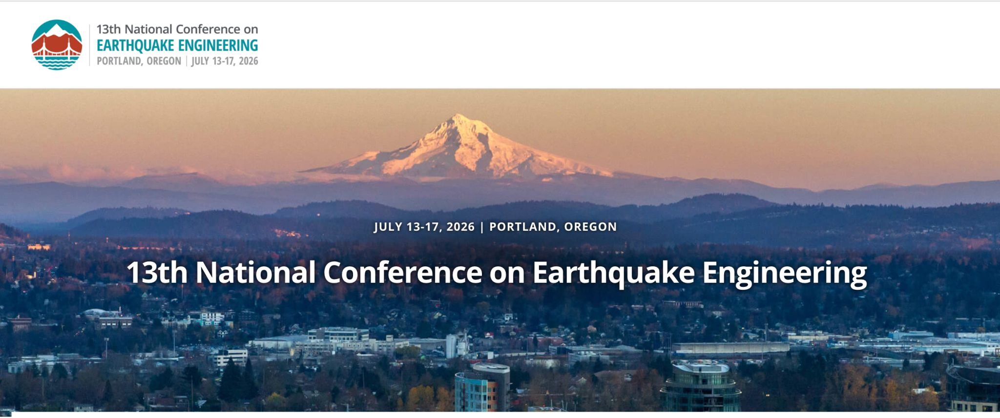
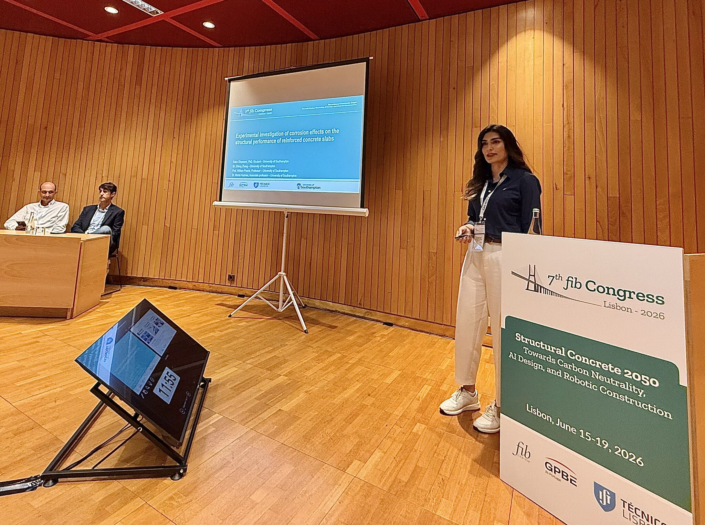
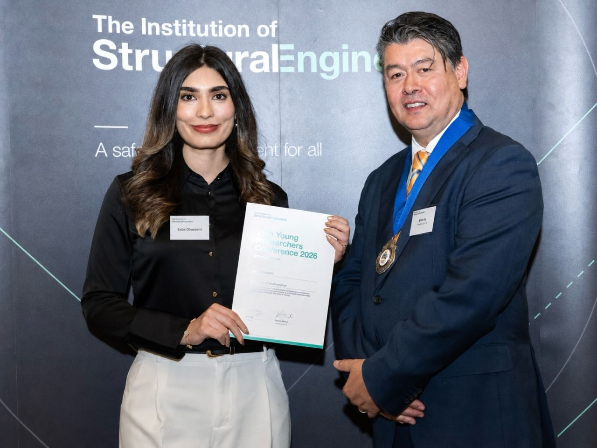
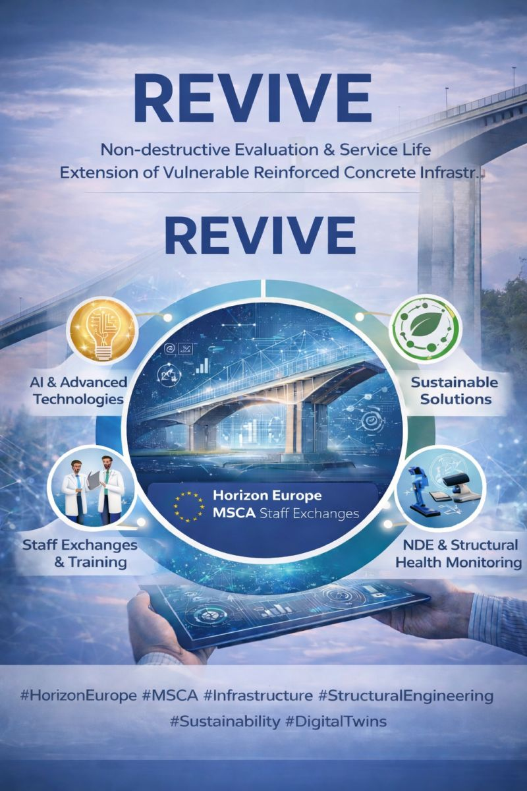

News & events
Workshops, conferences, funding and recognitions from across the lab.

Bringing together researchers and industry to advance assessment, monitoring, and service life extension of infrastructure. Organised by Dr Mohammad Mehdi Kashani as part of the Horizon Europe MSCA-funded REVIVE project, this day-long workshop bridges the gap between academic research and practical infrastructure management, with sessions from consortium partners, infrastructure owners and industry representatives.
Key topics: Non-Destructive Evaluation (NDE) and Structural Health Monitoring (SHM); Artificial Intelligence, Data Analytics and Digital Twins; Infrastructure Asset Management and Service Life Prediction.

Dr Mehdi Kashani recently represented the University of Southampton's National Infrastructure Laboratory at 13NCEE, organised by the Earthquake Engineering Research Institute. Partnering with Dr Evangelia Georgantzia from the University of Bristol's SoFSI Laboratory, the collaboration showcased UK experimental structural engineering research on a global stage, delivering four papers covering resilient and sustainable engineering, including demountable spine-inspired structural systems and drift capacities in ageing RC bridge piers.

PhD researcher Saba Ghassemi presented her latest experimental findings at the 7th fib Congress, in a talk titled “Experimental Investigation of Corrosion Effects on the Structural Performance of Reinforced Concrete Slabs.” The work is part of her ongoing PhD research under the supervision of Dr Mehdi Kashani and Prof William Powrie.
More detail →
PhD researcher Saba Ghassemi was honoured with the Young Researcher Conference Award at the IStructE People and Papers Awards 2026, presented in the presence of IStructE President Brian Uy and Chief Executive Yasmin Becker. The award recognises the impact of her PhD research, conducted at the University of Southampton's School of Engineering under the supervision of Dr Kashani and Prof Powrie.
More detail →
The REVIVE proposal (Non-destructive Evaluation and Service Life Extension of Vulnerable Reinforced Concrete Infrastructure) secured €1,027,050 under the EU Horizon Europe MSCA Staff Exchanges programme. Coordinated by Dr Kashani as consortium lead, REVIVE unites an international team of researchers and industry practitioners to advance AI-enabled non-destructive evaluation, structural health monitoring, digital twins and sustainable solutions for ageing bridges and tunnels.
More detail →Dr Mehdi Kashani was awarded the John Henry Garrood King Medal 2025 by the Institution of Civil Engineers, recognising the high-impact research in “A lumped plasticity model for corrosion-damaged reinforced concrete columns,” published in the Proceedings of the ICE – Bridge Engineering, with co-authors Hamed Roohbakhsh, Afshin Kalantari and Dr-Ing Akanshu Sharma.